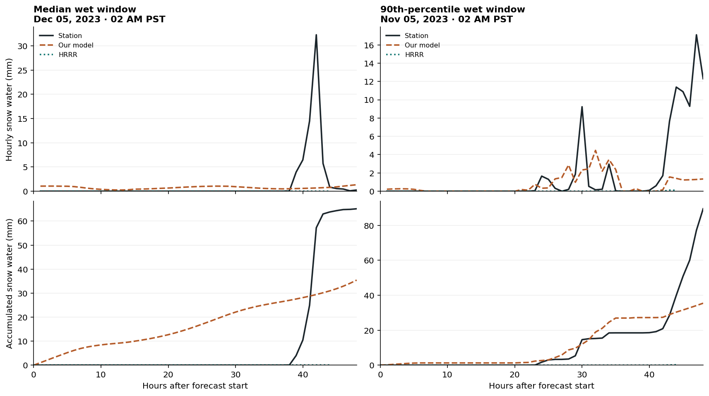

Mammoth live forecast
How well does Snowline predict falling snow at Mammoth?
The selected forecast is Weather + radar ridge 0.3. Each hourly value predicts the water
equivalent of falling snow at the Jeff Dozier Snow Study Site, about 1.1 km from Main Lodge.
An accumulation of 1 mm SWE means 1 litre of water per square metre after melting.
Two storms from held-out winters

Each column starts from a single issued forecast. Examples were chosen by observed 48-hour accumulation,
using the median and 90th percentile among complete snowy test dates. Only the earliest complete
snowy start per UTC date was eligible. The tables below use all eligible windows.
Forecast errors by horizon
Accumulation errors are in mm SWE. RMSE gives large misses more weight. MAE is the mean absolute miss.
Positive mean error indicates overprediction. The prediction range uses errors from the validation winter.
Its coverage is measured below on the two later winters.
| Hours |
Windows |
Weather runs |
RMSE |
MAE |
Mean error |
80% range coverage |
| 1 |
2529 |
476 |
5.51 |
1.67 |
0.69 |
88% |
| 3 |
1936 |
475 |
12.41 |
3.98 |
1.63 |
90% |
| 6 |
1800 |
471 |
20.41 |
6.67 |
3.25 |
89% |
| 12 |
1515 |
426 |
35.57 |
12.17 |
6.13 |
89% |
| 24 |
214 |
37 |
21.48 |
14.65 |
4.11 |
89% |
| 48 |
162 |
27 |
30.61 |
25.38 |
13.86 |
96% |
Matched comparisons on wet and dry windows
Every pair of scores uses the same complete observed hours and forecast windows. Wet means measured
accumulation greater than zero. Dry means exactly zero throughout the window. A dash indicates that
the sample was empty. An extended HRRR cycle reaches 48 hours from initialization. A later rolling
forecast can therefore have fewer than 48 native HRRR hours. The fitted model handles its remaining hours.
Native HRRR
| Horizon |
Windows |
Wet |
Our model |
Reference |
Our wet |
Ref wet |
Our dry |
Ref dry |
| 1h |
2529 |
494 |
5.51 |
6.20 |
11.58 |
14.01 |
2.26 |
0.28 |
| 3h |
1936 |
451 |
12.41 |
14.80 |
23.08 |
30.64 |
6.25 |
0.81 |
| 6h |
1800 |
489 |
20.41 |
23.03 |
38.61 |
44.19 |
3.98 |
0.41 |
| 12h |
1515 |
527 |
35.57 |
39.24 |
60.01 |
66.53 |
4.34 |
0.30 |
| 24h |
214 |
59 |
21.48 |
25.83 |
36.68 |
49.19 |
11.18 |
0.00 |
| 48h |
0 |
0 |
— |
— |
— |
— |
— |
— |
ECMWF IFS via Open-Meteo
| Horizon |
Windows |
Wet |
Our model |
Reference |
Our wet |
Ref wet |
Our dry |
Ref dry |
| 1h |
1671 |
289 |
5.46 |
6.13 |
12.16 |
14.72 |
2.27 |
0.28 |
| 3h |
1231 |
259 |
12.00 |
12.68 |
23.50 |
27.62 |
5.93 |
0.62 |
| 6h |
1135 |
271 |
21.16 |
19.74 |
42.55 |
40.39 |
4.51 |
0.09 |
| 12h |
936 |
292 |
40.02 |
38.60 |
71.47 |
69.10 |
3.38 |
0.03 |
| 24h |
0 |
0 |
— |
— |
— |
— |
— |
— |
| 48h |
0 |
0 |
— |
— |
— |
— |
— |
— |
HRRR with a decaying persistence forecast beyond its last hour
| Horizon |
Windows |
Wet |
Our model |
Reference |
Our wet |
Ref wet |
Our dry |
Ref dry |
| 1h |
2529 |
494 |
5.51 |
6.20 |
11.58 |
14.01 |
2.26 |
0.28 |
| 3h |
1936 |
451 |
12.41 |
14.80 |
23.08 |
30.64 |
6.25 |
0.81 |
| 6h |
1800 |
489 |
20.41 |
23.03 |
38.61 |
44.19 |
3.98 |
0.41 |
| 12h |
1515 |
527 |
35.57 |
39.24 |
60.01 |
66.53 |
4.34 |
0.30 |
| 24h |
214 |
59 |
21.48 |
25.83 |
36.68 |
49.19 |
11.18 |
0.00 |
| 48h |
162 |
66 |
30.61 |
37.86 |
36.19 |
59.32 |
26.09 |
0.00 |
Monthly station average
| Horizon |
Windows |
Wet |
Our model |
Reference |
Our wet |
Ref wet |
Our dry |
Ref dry |
| 1h |
2529 |
494 |
5.51 |
6.65 |
11.58 |
14.63 |
2.26 |
1.74 |
| 3h |
1936 |
451 |
12.41 |
16.13 |
23.08 |
32.01 |
6.25 |
5.29 |
| 6h |
1800 |
489 |
20.41 |
25.53 |
38.61 |
45.73 |
3.98 |
10.74 |
| 12h |
1515 |
527 |
35.57 |
43.72 |
60.01 |
67.80 |
4.34 |
21.89 |
| 24h |
214 |
59 |
21.48 |
56.09 |
36.68 |
54.49 |
11.18 |
56.69 |
| 48h |
162 |
66 |
30.61 |
124.84 |
36.19 |
122.20 |
26.09 |
126.62 |
Long windows with a missing sensor minute
During 2024/25 the sensor regularly missed one minute at 12 UTC. Here every hour has at least 59 measured minutes. We sum only measured minutes, and weight each issued hourly prediction by its observed duration. This assumes a uniform forecast rate within each hour. Capped hours are excluded. These scores compare observed-time subtotals in mm SWE. Each row uses identical windows for the model and its reference.
| Horizon |
Reference |
Windows |
Wet |
Our RMSE |
Ref RMSE |
Our wet |
Ref wet |
| 24h |
Native HRRR |
2635 |
1209 |
59.03 |
83.95 |
86.48 |
123.94 |
| 24h |
ECMWF |
1800 |
709 |
56.61 |
79.55 |
89.29 |
126.76 |
| 24h |
HRRR + tail |
2635 |
1209 |
59.03 |
83.95 |
86.48 |
123.94 |
| 48h |
ECMWF |
1710 |
943 |
96.68 |
128.30 |
129.04 |
172.77 |
| 48h |
HRRR + tail |
2481 |
1524 |
104.50 |
133.71 |
132.43 |
170.60 |
Fresh-snow depth at Main Lodge
A separate calibration translates hourly HRRR snow water into estimated fresh-snow depth using complete Pacific calendar months of resort reports. The validation winter selected single ratio. Error was measured on 12 held-out months. Hourly resort depth timing comes from the weather model and has no independent hourly depth score.
| Depth forecast |
Monthly RMSE (in) |
Monthly MAE (in) |
| single ratio |
13.44 |
10.32 |
| temperature ratios |
23.62 |
18.50 |
| fixed 10 to 1 |
18.33 |
14.00 |
| climatology inches |
34.31 |
27.13 |
Measured and predicted monthly fresh snow
| Month |
Observed (in) |
Our model (in) |
Historical average (in) |
| 2023-11 |
14.00 |
10.18 |
28.30 |
| 2023-12 |
12.00 |
13.95 |
66.02 |
| 2024-01 |
72.00 |
38.60 |
68.53 |
| 2024-02 |
133.00 |
115.73 |
68.95 |
| 2024-03 |
95.00 |
107.11 |
61.30 |
| 2024-04 |
31.00 |
19.08 |
33.49 |
| 2024-11 |
62.00 |
62.42 |
28.30 |
| 2024-12 |
39.00 |
26.84 |
66.02 |
| 2025-01 |
10.00 |
12.71 |
68.53 |
| 2025-02 |
74.00 |
87.48 |
68.95 |
| 2025-03 |
76.00 |
69.77 |
61.30 |
| 2025-04 |
19.00 |
10.67 |
33.49 |
Model selection
Candidate weights were fitted on the first two winters. The next winter
selected the lowest mean validation RMSE relative to calendar climatology, with equal weight on each
of the six horizons. Later winters measure out-of-sample performance. Window starts within a
weather run overlap and should not be counted as independent storms.
| Use |
Winters |
Weather runs |
Window starts |
With valid point radar |
| Train |
2020/21, 2021/22 |
449 |
2694 |
1559 |
| Validation |
2022/23 |
259 |
1554 |
885 |
| Test |
2023/24, 2024/25 |
489 |
2923 |
801 |
Validation scores for all candidates
| Candidate |
Validation score |
| Weather + radar ridge 0.3 |
0.55 |
| Weather ridge 0.3 |
0.56 |
| Weather + radar ridge 0.03 |
0.56 |
| Calibrated HRRR + radar update |
0.56 |
| Weather ridge 0.03 |
0.56 |
| Calibrated HRRR |
0.57 |
| Power-calibrated HRRR 0.75 |
0.57 |
| Power-calibrated HRRR 1.25 |
0.58 |
| Weather + radar neural network 0.1 |
0.71 |
| Weather neural network 1 |
0.74 |
| Weather + radar neural network 1 |
0.75 |
| Weather neural network 0.1 |
0.93 |
| HRRR with tail persistence |
0.95 |
| Calendar climatology |
1.00 |
Complete hours contain 60 measured minutes. Four hours that hit the instrument limit were excluded.
Other published high rates were retained. The instrument series includes unusually large readings. Model and error values are expressed on its measurement scale. The station estimates frozen precipitation intensity from
particle measurements using a proprietary conversion. Extreme rates affect RMSE, and the model
inherits the instrument’s uncertainty. Winter data gaps are substantial at the longer horizons.
The resort’s season totals measure fresh-snow depth, a separate quantity.
Download scores · Station data
· NOAA HRRR
· NOAA MRMS
· Open-Meteo single-run archive